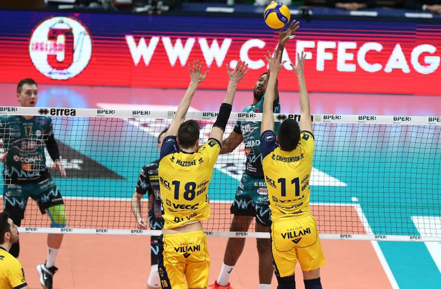

Sorteggi Champions League maschile:Derby Modena-Perugia ai quarti di finale!
Trasferta insidiosa per Civitanova in Polonia contro lo Zaksa,Trento in Germania contro il Berlin Recycling Volleys. L'andata si svolgera' il 23/25 febbraio, mentre il ritorno il 2/4 marzo
Perugia vince la regular season!
A una giornata dalla fine la Sir tiene a bada Civitanova. Piacenza vince a Monza e la scavalca
Continua a leggere...
Fuochi d'artificio in Serie A
Volley femminile, serie A1 23. giornata. Battaglia Chieri-Scandicci per il quarto posto, Novara quasi seconda. Brescia riapre la lotta salvezza
Continua a leggere...
Conosciamo meglio...
Figlio del pallavolista sovietico campione olimpico Vjačeslav Zajcev e della nuotatrice Irina Pozdnjakova, Ivan Zaytsev, soprannominato lo "zar", durante la sua infanzia, per seguire l'attività sportiva del padre, si sposta con la sua famiglia in diverse parti d'Europa. Inizia a praticare la pallavolo a 7 anni a San Pietroburgo, trasferendosi poi per un anno a Belgorod. Nel 1998, all'età di dieci anni, si trasferisce in Italia insieme alla famiglia. Il 12 maggio 2008, dopo dieci anni di residenza ininterrotta in Italia, presta giuramento per ottenere la cittadinanza italiana. Il 18 marzo 2013 sposa Ashling Sirocchi, con la quale ha avuto tre figli Alessandro "Sasha", nato il 31 ottobre 2014, Sienna, nata il 4 gennaio 2018, e Nausicaa nata il 3 ottobre 2019. A novembre 2016, partecipa con la moglie alla campagna promozionale per la raccolta benefica promossa dalla Fondazione Banco Alimentare. A marzo 2017, diviene ambasciatore e testimonial italiano del Programma alimentare mondiale. Mia è il titolo del suo primo libro-intervista a carattere autobiografico, concesso all'editorialista ed ex giocatore di rugby Marco Pastonesi, edito da Rizzoli nel 2017.